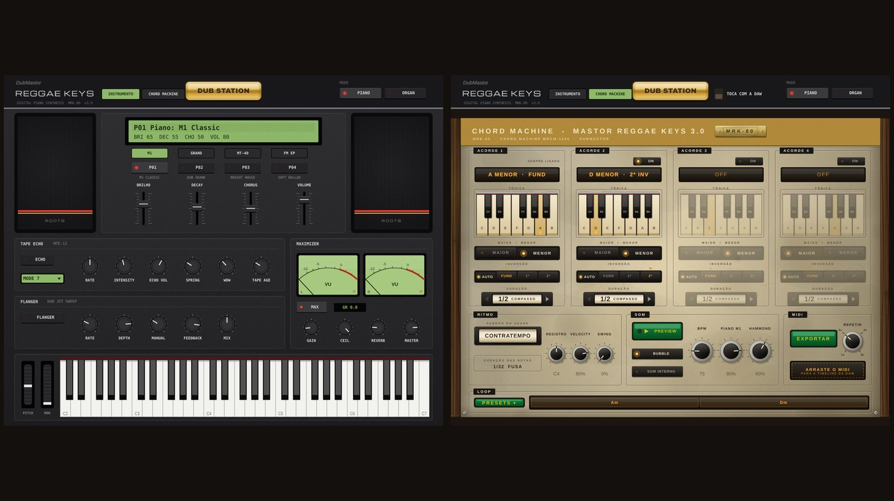

Mastor Reggae Keys MRK-80 3.4
O piano de reggae: 13 timbres do Korg M1 ao Rhodes e ao Wurlitzer, com o Mastor Reggae Chord Machine MRCM-1240 inteiro na aba CHORD MACHINE: monte o riddim, ouça no próprio teclado e arraste o MIDI para a DAW. (O órgão Hammond agora está no Mastor Reggae Organ MRO-68.)
- Aba CHORD MACHINE: 4 acordes maior e menor com inversão e duração, skank no CONTRATEMPO ou BANG BANG (o bang dobrado, no & e no a), bubble com as duas mãos, PREVIEW e TOCA COM A DAW
- Ouvir o acorde: ao clicar na tônica, em maior/menor ou na inversão, o acorde toca enquanto o botão estiver apertado
- No play, as notas que estão tocando acendem em verde no teclado da tônica
- Próximas harmonias: depois do acorde 1, cada cartão destaca as que mais combinam, conforme as cadências do reggae
- PRESETS no padrão do mega banco da Riddim Machine: estilos, riddims A–Z, músicas A–Z e ★ favoritos, só com os riddims que têm a harmonia levantada (321 músicas), com o BPM da música
- PREVIEW na aba do instrumento e PAN do piano e do GUITAR SKANK
- Skank e bubble tocam no piano do instrumento, com eco, flanger e maximizer
- Piano com 13 timbres: M1 Piano 16 comprimido (o de fábrica), M1, M1 Grand Piano, Grand Piano, Honky Tonk, Yamaha CP-80, Yamaha C7, FM EP (estilo Yamaha DX), Casio CZ-101, MT-40 (estilo Casio), Rhodes Stage, Rhodes Suitcase e Wurlitzer 200A, com o gabinete mudando junto com o timbre
- Botão GUITAR SKANK (sempre começa desligado): a guitarra do Mastor Reggae Guitar MRG-68 toca o skank junto com o piano
- Flanger dub estilo Mad Professor, eco de fita, maximizer, VUs analógicos e teclado que acende com o MIDI
- Projetos antigos abrem igual (a aba DUB CHORDS vira a CHORD MACHINE com os mesmos acordes)
Instrumento · Windows: VST3 + standalone · Mac: VST3, AU + standalone (Intel e Apple Silicon)
⬇ Windowsinstalador .exe · VST3
⬇ Macinstalador .pkg · VST3 + AU
▶ Tocar no celular / navegadorsem instalar nada · versão 3.2
Instalação manual: zip Windows · zip Mac